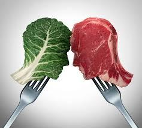

Es una serie impresionante aunque aveces el ritmo lento puede aburrir sobre todo en la primera temporada
Eso hace que sea la peor en mi opinion la 2 es muy buena aunque la mejor es la 4
Lo mejor de la serie es jesse Tiene una evolucion impresionante ya que es un personaje diferente de la primera a la ultima
Una buena parte de los veganos lo son porque creen que al serlo no mueren mas animales
pero quiero que se hagan una pregunta.
Hay dos opciones o el granjero se las lleva y las deja libre que es la menos probable
o las mata para evitar ese gasto
Siguiendo esa logica el veganismo genera justo lo que quiso evitar
Por eso no tiene sentido si es para salvar animales